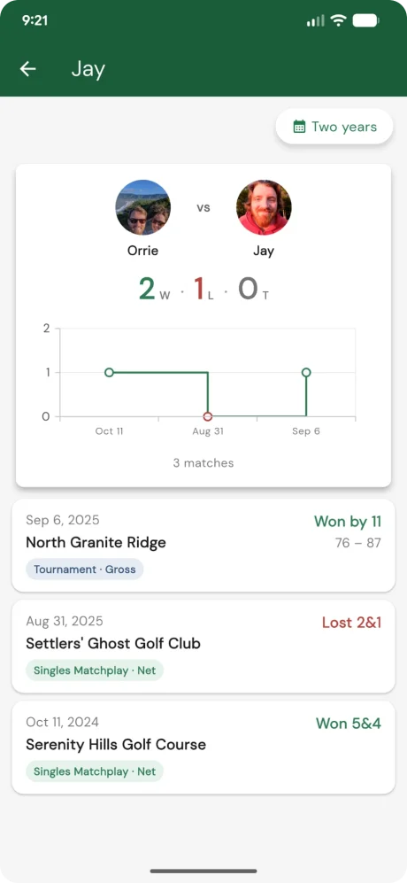

Match history vs another player
May 6, 2026
Ever finish a round and wonder — am I actually beating my buddy this season, or just remembering the wins? Now you don’t have to guess.
Open the Rounds tab and tap the new Match history chip. Pick anyone you follow (or who follows you), and you’ll see your full head-to-head record — every shared round, who came out on top, and the trend over time.

How it works
The match history pulls every round you and the other player both have on Squabbit, then formats the result based on the scoring type each round used:
- Stroke play rounds compare totals — you won by 3, lost by 1, all square.
- Matchplay rounds report the actual match result — 4&3, 1 up, all square.
- Stableford and Quota rounds compare points.
- Skins rounds tally skins won.
The summary card at the top shows your win/loss/tie record and the running trend — tap into any individual round to see the scorecard.
Find it
Open the Rounds tab and look for the Match history chip near the top. Picker pulls from your followers and following, so you can compare against anyone you’ve connected with on Squabbit.